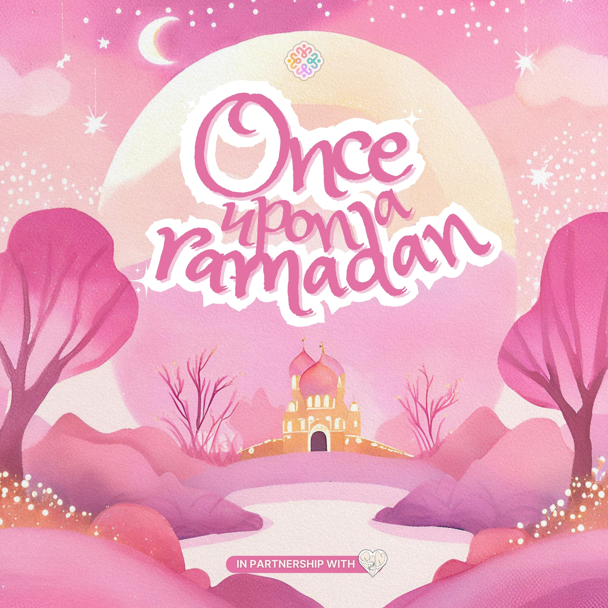
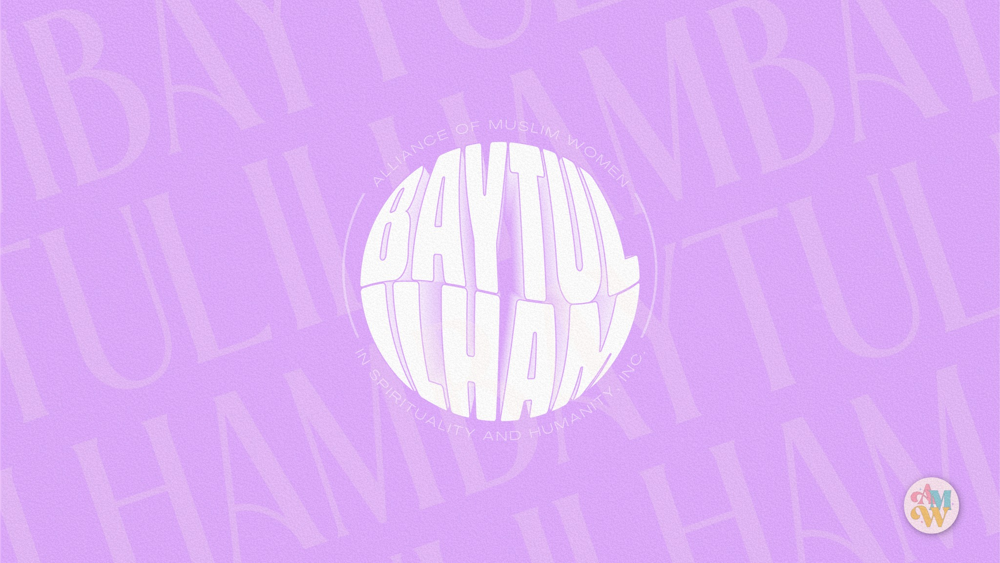
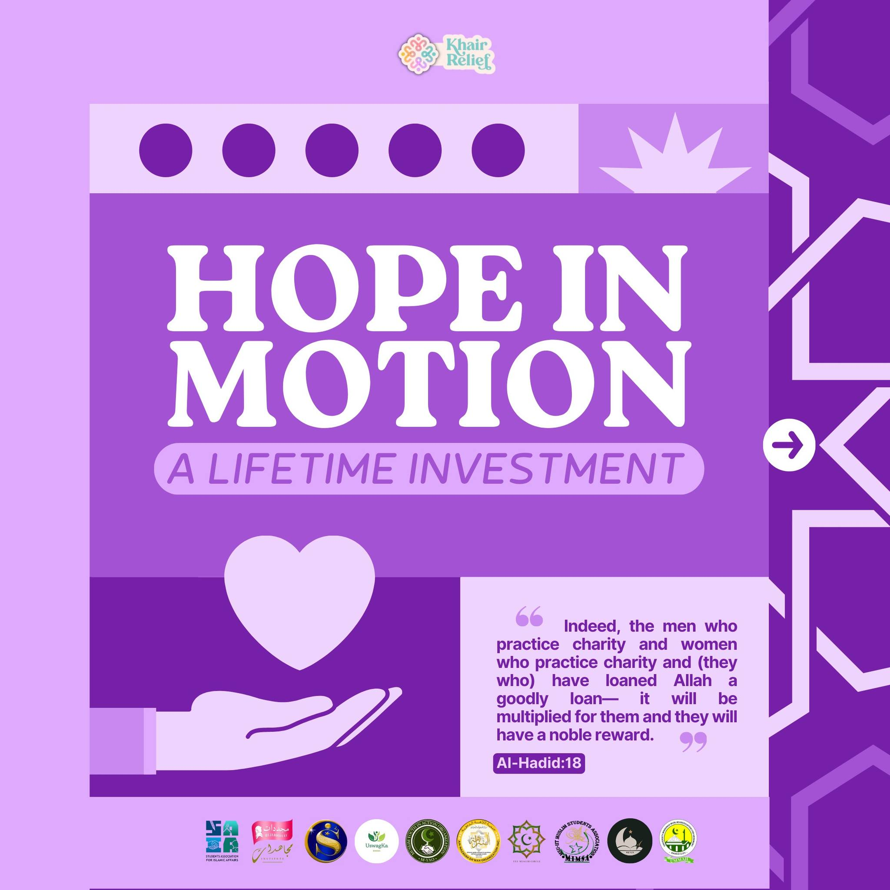
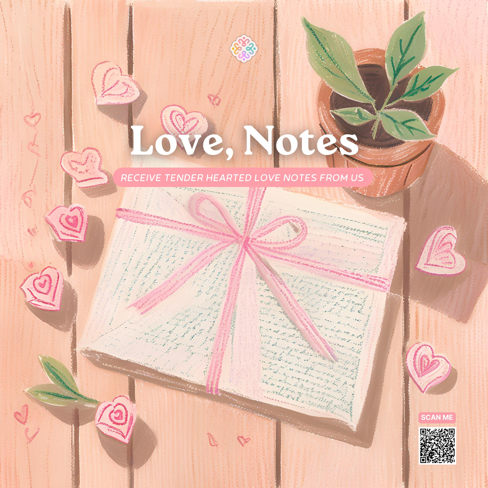
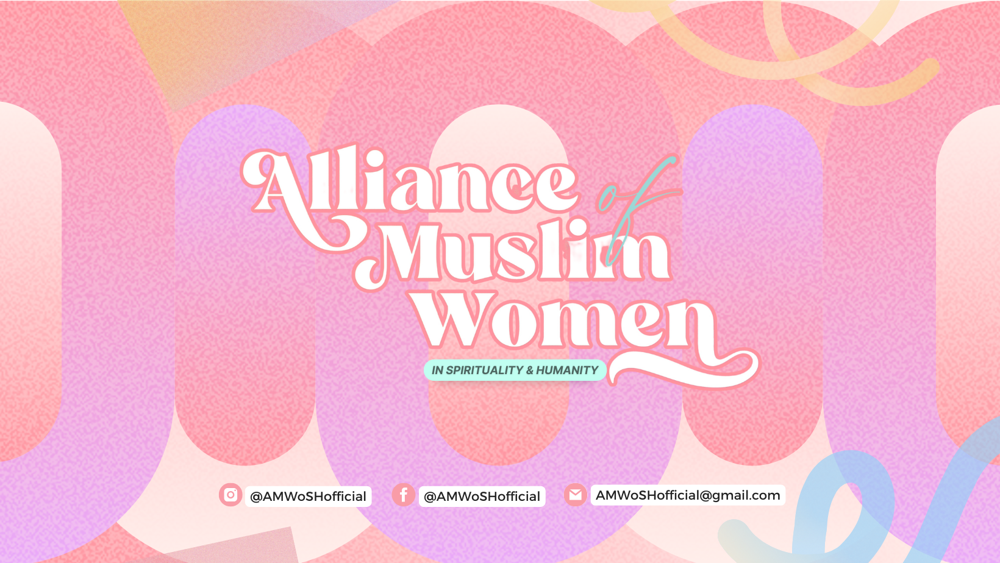
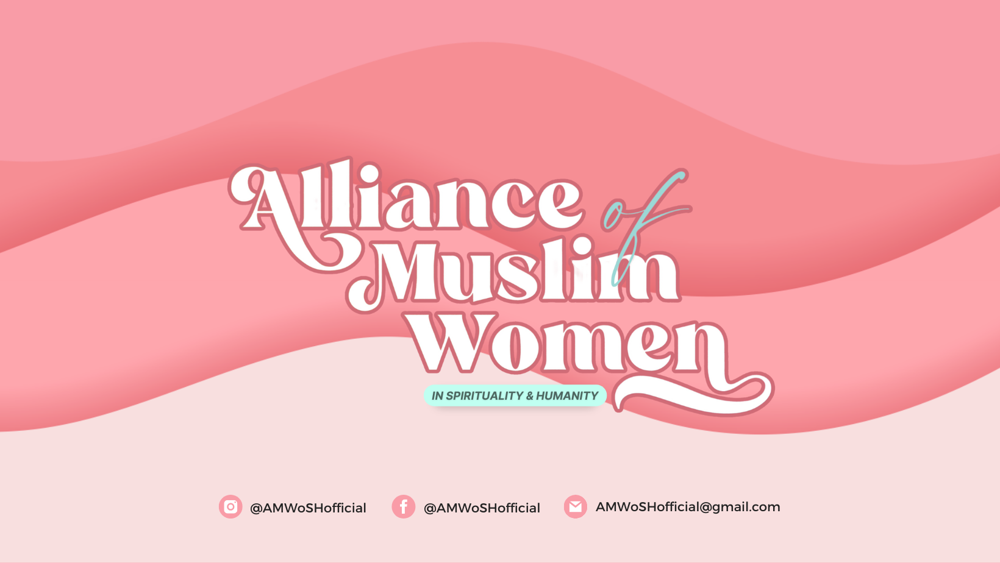
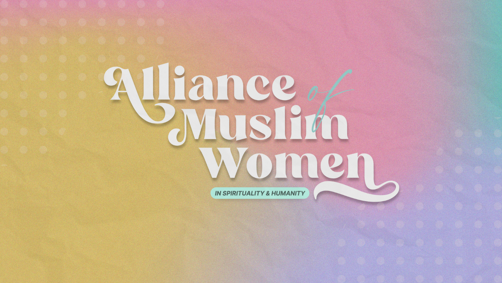

Our Projects
Our projects reflect our commitment to spirituality, humanitarian service, education, and community empowerment—each designed to create meaningful impact.

Once Upon a Ramadan
An Imaan care kit thoughtfully designed to nurture spiritual reflection, intentional worship, and meaningful connection throughout the blessed month of Ramadan.
Learn More
Baytul Ilham
A safe haven for seeking spiritual guidance through muhadarah sessions, late-night reflections, and special webinars.
Learn More
Khair Relief
A humanitarian initiative dedicated to improving lives through compassionate service and relief efforts.
Learn More
Love Notes
A subscription-based initiative offering weekly inspirational and heartwarming memos to uplift and encourage.
Learn More
The AMWoSH Archives
An online publication aimed at dismantling misperceptions and promoting awareness and understanding of Islam.
Learn More
Launch Your Career
A webinar series for Muslim students, providing tools and insights to elevate career prospects and explore opportunities.
Learn More
Night of Hope
A weekly virtual retreat fostering spiritual renewal, connection, and a strong, cohesive AMWoSH culture.
Learn More